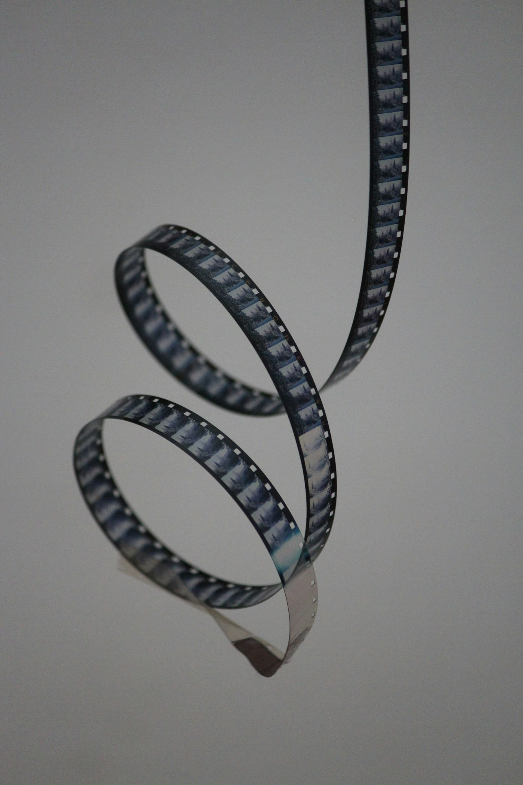
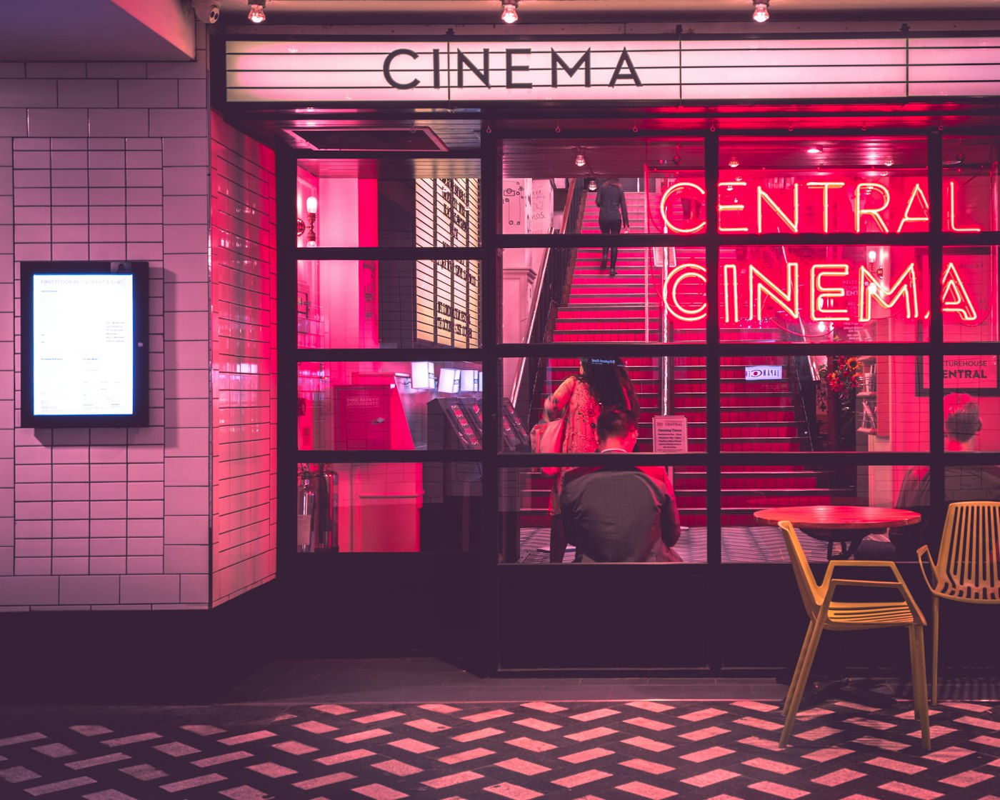

THE COMPLETE ANATOMY OF
MAKING A MOTION PICTURE
Every phase, sector, technical department, and physical tool laid out in strict chronological order. Follow the exact path from raw concept and screenplay breakdown to camera blocking, audio mixing, color grading, and world premiere distribution.
Choose Your Department Workstation
Jump directly into specialized, live interactive tools tailored for your on-set or post-production role:
Director's Suite
Screenplay beat calculator, camera shot list builder & scene coverage matrix.
CineLab Optics & Lights
Interactive 3-point lighting stage, depth of field simulator & live contrast ratio.
Live Call Sheet Studio
Hollywood call sheet creator, script 8ths estimator, budget allocator & DOOD.
Color & Foley Soundboard
Split-screen LUT laboratory, interactive foley board with 8 sound triggers & live waveform.
Blockbuster Scene Lab & The 5 Pillars
Instead of reading dry theory, explore how a Hollywood production actually conceives, rigs, shoots, and finishes an epic sequence: "THE ZERO-GRAVITY METROPOLITAN COLLAPSE". Interact with the live physics generator below, then examine each production phase.
CineLab: Interactive Lighting & Framing Studio
Experience optical physics and lighting ratios in real time. Manipulate the 3-point lighting stage to observe live shadow projection and simulate depth of field on various focal lengths.
3-Point Lighting & Contrast Studio
Visualize how Key, Fill, and Rim lights mold a subject's face.
Optics, Aperture & Depth of Field
Understand f-stops, lens compression, and cinematic bokeh.
The Cinema Theater & Video Masterclasses
Watch actual film set operations and visual breakdowns. Experience how professional directors frame movement, stage actors, and evaluate takes through director monitors.
Curated Video Lessons
1. Cinematic Motion & Camera Movement
Demo Video (Local Asset) 02:15 • 24fps Standard
2. The 180-Degree Rule & Eyelines
Essential Grammar Visual Tutorial Embed3. Lighting the Subject on Set
Grip & Electric Masterclass Studio Setup Breakdown4. Post-Production Color Grading
DaVinci Resolve Workflow Scopes & Skin Tone Line5. Hero Elevation: Prabhas in Salaar
Blockbuster Staging Case Study 1000 FPS & Low-Angle GeometryColor Science: Flat Log vs Film Grade
Drag the interactive comparison handle below to see how raw, flat camera Log gamma is transformed into a rich, three-dimensional cinematic image with Kodak film emulation.
Live Grading Controls
Live waveform updates dynamically as you adjust exposure, LUT curves, and contrast.
Logarithmic curves compress extreme highlights and shadow noise to retain 14+ stops of dynamic range on modern cinema sensors.
Expand contrast, apply proper color space transforms (ACEScc), align skin tones to the 56° vector line, and create stylistic mood.
To build the ruthless, petroleum-soaked dystopian empire of Khansaar, director Prashanth Neel and DP Bhuvan Gowda pioneered an extreme subtractive monochrome-hybrid color model: midtone greens, blues, and cyans were aggressively pulled down by 85%, plunging the city streets, army rigs, and iron fortresses into deep charcoal, soot, and gunmetal gray. Against this brutalist dark canvas, ACEScc color transforms let warm golden embers, fiery muzzle flashes, and burning rim-light on Prabhas's towering silhouette punch through with razor-sharp dynamic contrast.
Set Hierarchy & Crew Sectors
Organized by chain of command. Discover who runs each department, their standard equipment, how to speak their language, and common communication mistakes.
The Interactive Production Suite
Tools arranged in the exact order you need them: Structure your story beats first, calculate script eighths for schedule feasibility, build your camera shot list, and allocate your indie budget.
Interactive Production Milestones
Blake Snyder / Three-Act Narrative Beat Calculator
Enter your planned script length (in pages or minutes) to calculate industry-standard narrative milestones.
Hollywood "Eighths of a Page" Estimator
1st ADs and Script Supervisors measure scene volume in 1/8ths of a page. A realistic indie shoot day achieves 3 to 5 pages per day.
Add Scene Shot
Create structured shot coverage for your camera team.
Production Shot List
0 Shots Planned| Sc / Sh | Size | Angle | Lens | Movement | Action / Notes | Action |
|---|
Indie Filmmaking Tier Breakdown & Real-World Allocation
Select your tier to see exact percentage splits, gear recommendations, and realistic survival strategies.
The Foley Studio & On-Set Soundboard
Sound is 60% of the emotional cinematic experience. Test authentic on-set audio cues, mechanical shutter sounds, walkie-talkie callouts, and Hollywood trailer braaams with real-time frequency visualizer.
The On-Set Jargon Decoder
Never look like an amateur when the Gaffer asks for a "C-47" or the 1st AD yells "Abby Singer!". Search over 65 essential film set terms, abbreviations, and callouts.
First-Time Filmmaker Pre-Flight Audit
Organized chronologically from contracts to shooting day and post deliverables. Tick off items and track your production readiness score in real-time. Automatically saved to your browser.